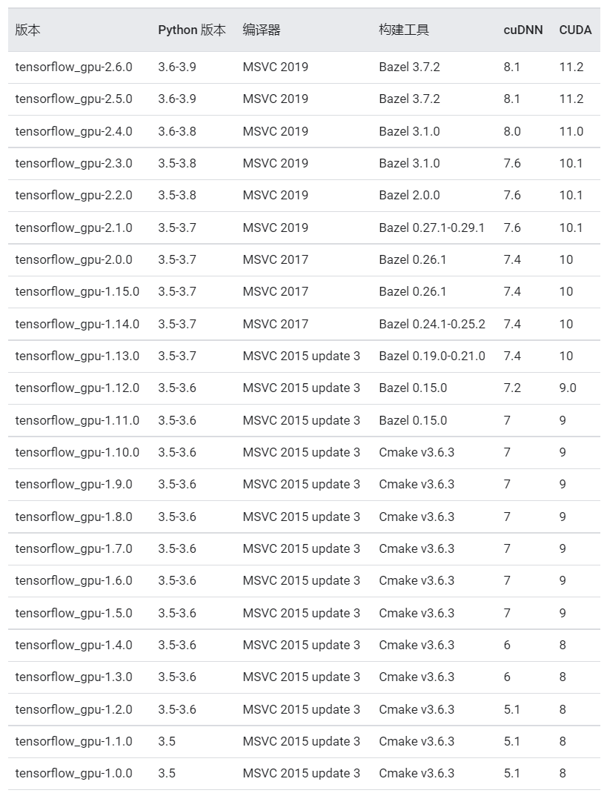
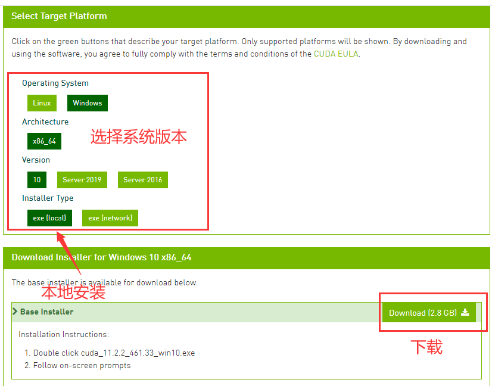
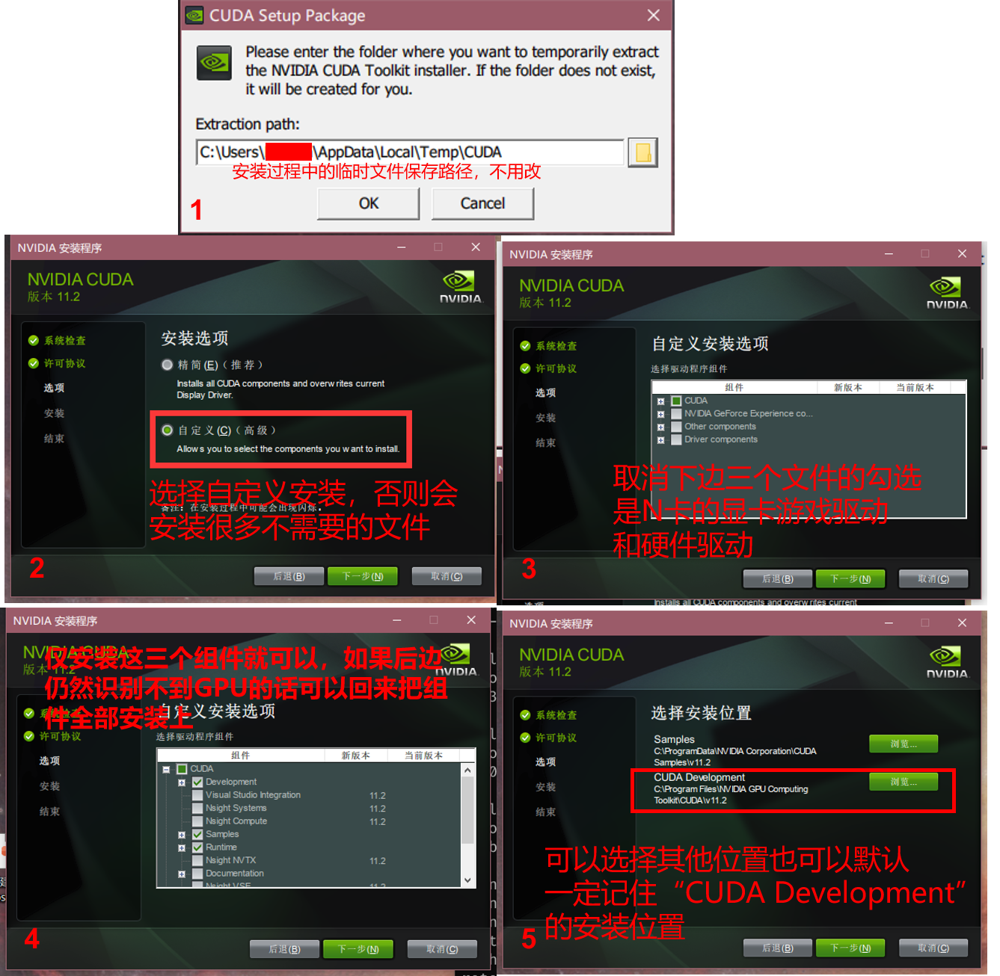
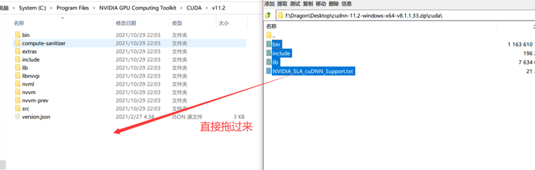
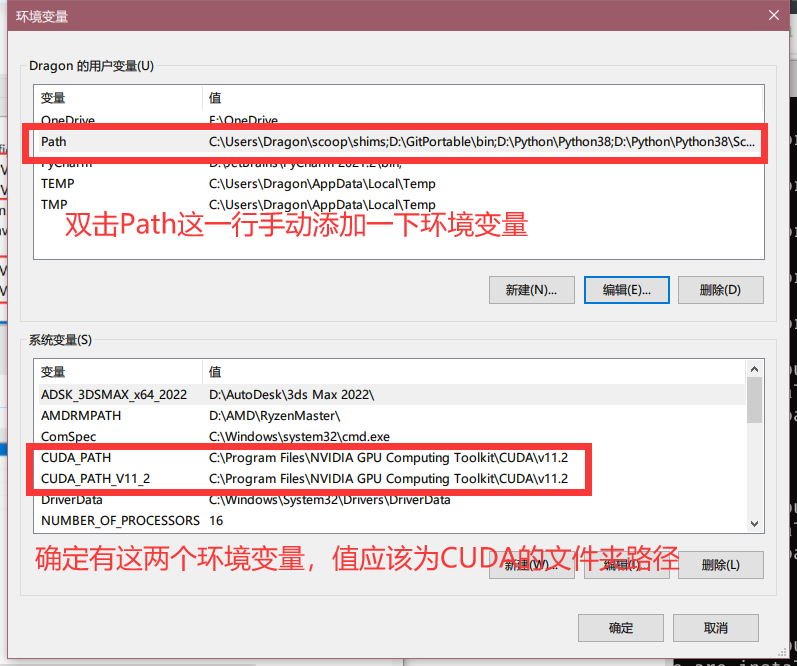

在安装CUDA时查找了不少资料，要么太旧要么太乱写的不知道他在干什么，于是自己整理了一下CUDA的安装过程，以此记录。本人使用的显卡为GTX 1660 Super，系统为Win10，Tensorflow版本为2.6.0，以下步骤为本人卸载了Tensorflow和CUDA后从头开始的安装步骤，亲测可行。
Tensorflow的安装
Tensorflow在1.15版本后已经将CPU版本和GPU版本进行了合并，可以很简单的通过pip来进行安装
pip install tensorflow |
安装完成后会自动检测系统中是否已经安装了CUDA套件，在检测到CUDA时，所有计算会优先使用GPU进行计算。
如果需要使用
pyTorch，则后续选择CUDA版本时应该参照PyTorch官网
如果需要同时使用Tensorflow和pyTorch，则后续选择CUDA版本的时候应尽量选择一个能够同时用于pyTorch和Tensorflow的版本。所有版本的pyTorch支持的CUDA可以在https://pytorch.org/get-started/previous-versions/查询。需要指出的是pyTorch所用的CUDA需要严格按照官网给出的CUDA版本号进行安装，而Tensorflow给出个CUDA版本号仅为官方验证可用的版本号，所以其他版本的CUDA也可能可以用于Tensorflow，但需要自行安装尝试。
CUDA与cuDNN的安装
CUDA为Nvida的开发工具，也叫CUDA Toolkit，cuDNN为Tensorflow运行时需要的依赖文件。网上不少文章安装前都要检查一下本机的英伟达驱动版本信息，本人在测试时发现不需要进行检查，只要确认自己的显卡支持CUDA并安装正确版本的CUDA和cuDNN即可。下面的步骤为如何确认自己的显卡是否支持CUDA以及如何确定自己需要的CUDA和cuDNN版本号
确认显卡是否支持CUDA
安装前需要确认自己的显卡是否支持CUDA，Nvida的显卡可以在官网查看对应的型号是否支持CUDA，未在列表的显卡也可进行安装尝试，如本人显卡为GTX 1660 super，安装CUDA后也可正常使用Tensorflow。
Tensorflow官网上并未说明对AMD显卡的支持。
确认显卡驱动版本
在桌面右键选择NVDIA控制面板，查看自己当前的版本信息。之后根据官网文档确定自己的显卡能够支持的CUDA版本。
比如我的驱动版本为471.41，根据文档显示我可以安装CUDA 11.4 Updata2以下的所有版本。
确认所需的CUDA与cuDNN版本（cuDNN版本必须与CUDA版本对应）
不同版本的Tensorflow对应的cuDNN与CUDA的版本参见下表，表中对应版本号为官方测试通过的版本号，尽量保持一致。
来源：https://tensorflow.google.cn/install/source_windows
下载CUDA与cuDNN
确认自己的显卡支持CUDA后，前往Nvida官网下载自己所需版本的CUDA工具包和cuDNN依赖
cuDNN依赖：https://developer.nvidia.com/rdp/cudnn-archive（需要注册一个Nvida的账号）
1. CUDA下载
打开官网页面后会看到所有版本的CUDA工具包，我这里选择的是11.2.2
接下来选择对应的系统版本和安装方式，最后点击下载等待下载完成。
2. cuDNN下载
在cuDNN的列表中选择支持11.1CUDA的8.1.1windows版本
安装CUDA
1. 安装CUDA
打开下载好的CUDA安装文件，按下边的流程进行安装。
全部设置完成后点击下一步并等待安装完成后即可
2. cuDNN组件安装
cuDNN下载完成后是一个压缩包，打开压缩包并将其内容解压至刚刚安装的CUDA Development文件夹内即可。如果弹出是否合并文件夹提示点击确定即可。
3. 设置环境变量
打开系统的环境变量设置，CUDA安装时应该会在系统变量中自动添加两个CUDA_PATH变量，如果未添加则自己手动进行添加。
系统变量确认正确后双击用户变量中的Path（或者选中后点击编辑），在弹出的变量设置窗口添加两个新的路径，分别是<CUDA_Development_Path>\bin和<CUDA_Development_Path>\lib\x64。<CUDA_Development_Path>替换为刚刚记下的CUDA安装路径。（没有意外的应该与系统变量中的CUDA_PATH一致，所以建议写%CUDA_PATH%\bin和%CUDA_PATH%\lib\x64）
测试GPU是否可用
在python中执行下面的命令测试目前GPU是否可用
import tensorflow as tf |
列表中出现PhysicalDevice(name='/physical_device:GPU:0', device_type='GPU')说明当前环境下Tensorflow能够使用GPU继续训练。
也可以使用tf.test.is_gpu_available()进行检测，返回True说明GPU可用。